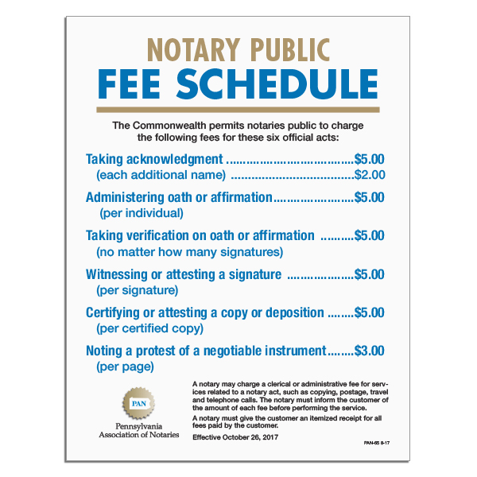

Transparent Pricing
Clear, straightforward pricing for all of our notary services.
Every notarial act is charged at the fee permitted by the Commonwealth of Pennsylvania. Remote Online Notary sessions add a $30 online processing fee, plus $0 for weekday office-hours appointments. Mobile notary visits add a travel fee starting at $20 for the first 15 miles. Beyond 45 miles, contact us for a quote.
State-Regulated
All notarial acts are charged the fee permitted by the Commonwealth of Pennsylvania. This does not include clerical or administrative fees listed for additional services.
Pennsylvania sets the maximum allowable fees for notarial acts. The official PA fee schedule is displayed below.

Remote Online Notary
The following fees apply to Remote Online Notary sessions, in addition to the standard PA notarial act fee.
| Fee | Monday – Friday | Saturday – Sunday |
|---|---|---|
| Online Processing Fee * | $30 | $30 |
| Office Hours Appointment (9AM – 4PM) | $0 | $20 |
| After Hours Appointment | $15 | $20 |
* The online processing fee is charged for every RON session.
Online Processing Fee ($30) + PA Notarial Act Fee + $0 office hours fee = Total
Mobile Notary
Travel fees are based on distance from our office at 116 South Cherry Street, Emporium, PA 15834, in addition to standard PA notarial act fees.
| Distance | Weekdays (9AM – 4PM) | After Hours & Weekends |
|---|---|---|
| 0 to 15 miles | $20 | $35 |
| 15 to 30 miles | $40 | $65 |
| 30 to 45 miles | $60 | $85 |
| Greater than 45 miles | Contact us for a quote | |
Please allow 24 hours for scheduling when possible. For distances greater than 45 miles, contact us for a custom quote.
Request Mobile NotaryCommon Questions
Pennsylvania sets the maximum allowable fee for each notarial act, and we charge the fee permitted by the Commonwealth. The official PA fee schedule is shown on this page. Clerical and administrative fees, travel fees and the online processing fee are separate and are listed in the tables above.
A $30 online processing fee applies to every RON session, in addition to the PA notarial act fee. A weekday appointment during office hours (9AM to 4PM) adds nothing; a weekend office-hours appointment adds $20. After-hours appointments add $15 on weekdays and $20 on weekends.
Yes. Travel fees are based on distance from our office at 116 South Cherry Street, Emporium, PA 15834, and are charged in addition to the standard PA notarial act fees. Weekday rates are $20 for 0 to 15 miles, $40 for 15 to 30 miles and $60 for 30 to 45 miles. Beyond 45 miles, contact us for a quote.
Yes. For RON sessions, a weekend office-hours appointment adds $20, and after-hours adds $15 on weekdays or $20 on weekends. For mobile visits, after-hours and weekend travel fees are $35, $65 and $85 for the 0 to 15, 15 to 30 and 30 to 45 mile bands.
We're happy to provide a detailed quote for your specific needs before you commit.